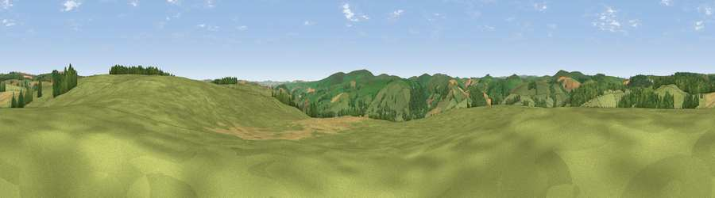

Viewpoint c5658_6358
#23130 in England · top 65% of its area beats it · —The view, rendered

A 360° render of this exact spot computed from the terrain model, tree cover and land cover — summer colours, afternoon light, calibrated against photographs of famous viewpoints. Real trees, hedges and buildings will differ in detail.
The panorama
Grey silhouette: terrain skyline in each direction (720 bearings, Earth curvature and refraction included). Dashed green: skyline with trees (+15 m) and buildings (+8 m) as obstacles. Blue strip: how far the ground is visible on each bearing.
Where the view opens
Wedge length = distance to the farthest visible ground on that bearing (vegetation-aware). Rings at 10, 25 and 50 km.
What fills the view
82% grassland · 13% woodland · 5% cropland
Angular shares of the visible panorama (visual magnitude), not map area. Landscape diversity 0.25 (0–1 Shannon).
Key numbers
More beautiful places nearby
The staircase of upgrades: each row has a higher view potential than everything closer. Driving times are estimates from straight-line distance, calibrated against real road routing — check an actual route before setting out.
| Place | Direction | Drive | Score |
|---|---|---|---|
| Viewpoint near Newcastle | ESE · 2 km | ~5 min | 54.3 |
| Viewpoint c5731_6402 | NNE · 4 km | ~10 min | 60.4 |
| Garn Rock Hill | ESE · 6 km | ~13 min | 62.4 |
| Viewpoint c5772_6450 | NE · 7 km | ~15 min | 72.5 |
| Viewpoint near Bishop's Castle | NE · 12 km | ~22 min | 75.5 |
| Viewpoint near Hopton Castle | ESE · 19 km | ~32 min | 79.3 |
| Viewpoint near Asterton | ENE · 22 km | ~37 min | 83.0 |
| Viewpoint near Halfway House | NNE · 33 km | ~51 min | 83.3 |
52.43811, -3.20878 · source: screening · position refined by local search. Computed location — check access rights before visiting.